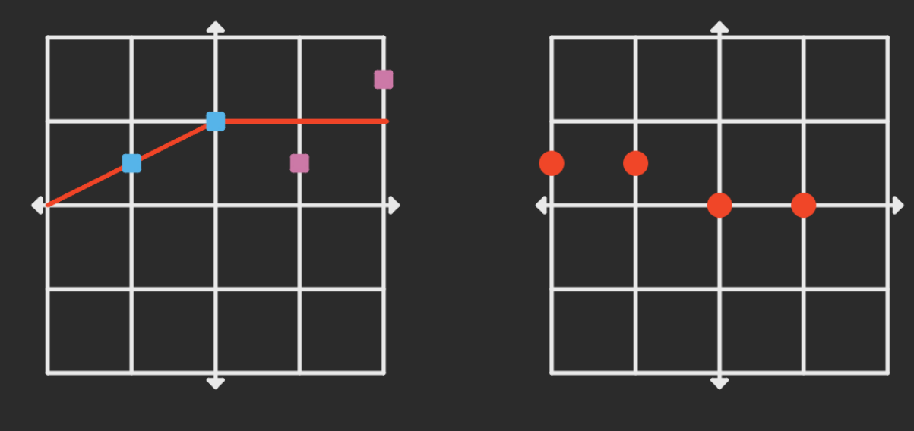
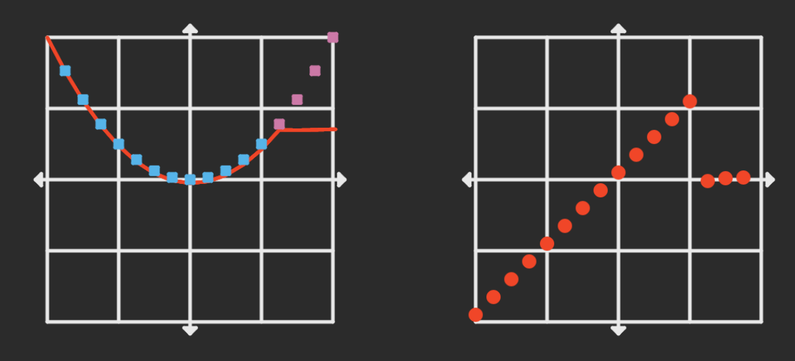
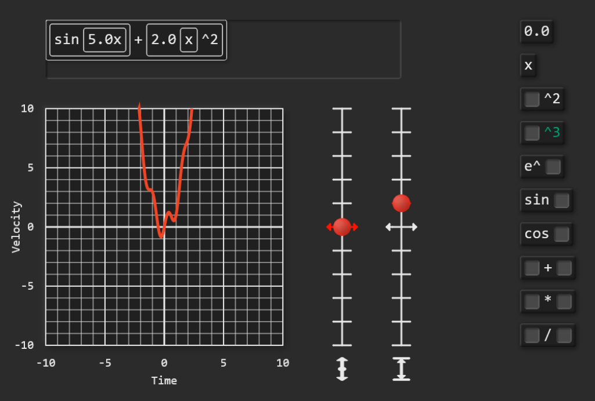

A puzzle game that teaches calculus
This is a project that aims to design a game to that teaches calculus through interactive puzzles. The game focuses on building intuition for the core concept of Calc I, the derivative. The scope of this game is much smaller than a typical calculus course, and is not intended to be a replacement. Rather, it aims to give a primer on derivatives.
When I took calculus for the first time, I memorized a list of derivative rules. This got me through the class fine, but left me with a shallow understanding. I couldn't give you an explanation (even an informal one) as to why the derivative rules were true.
The puzzles in the game aim to build intuition on the relationship between the graph of a function and its derivative. Below is a screenshot of a puzzle from the beginning of the game. The graph on the left represents some function, $f$, and the graph on the right is its derivative $f'$. The player sets the values of $f'$ by moving the circles on graph on the right. The puzzle is solved by setting the values of $f'$ so that $f$ hits the square targets.

We can add more points so that the graph becomes smoother. The piecewise functions shown below approach $f(x) = x^2/2$ and $f'(x) = x$. In this example, the puzzle is building the intuition as to why a quadratic function has a linear function as its derivative.

These purely graphical puzzles act as a toy that, when played with, gives an understanding of how the shape of a function relates to the shape of its derivative. But at some point we must use algebra to describe things precisely. The game uses a drag-and-drop block system (similar to the programming language Scratch) for algebraic notation.

This system makes problems easier by explicitly defining the tools that the student is allowed to use. The system encourages the student to treat elementary functions as literal building blocks. In particular this is useful for the chain rule, where a common issue for students is identifying how functions are nested in each other.
There are established ways to teach math in other media, like textbooks or a video lectures, so why not video games? Video games have some advantages over books and videos since they are interactive. Games are such a popular form of media, we might expect some people to prefer games to books or video. The goal is not to replace traditional learning methods, but to give another option with its own strengths and weaknesses.
There are many popular games in the genre of puzzle games. Many of these games require non-trivial problem solving, and ask players to learn a complex system of rules. The question is what happens if you design a puzzle game where the underlying system is something like derivative calculus. Even if that game is almost as compelling as a good puzzle games, it could be worth playing since it also has educational value.